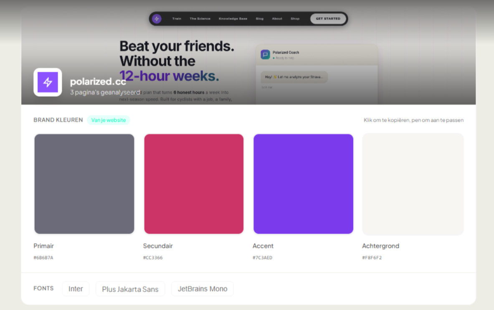
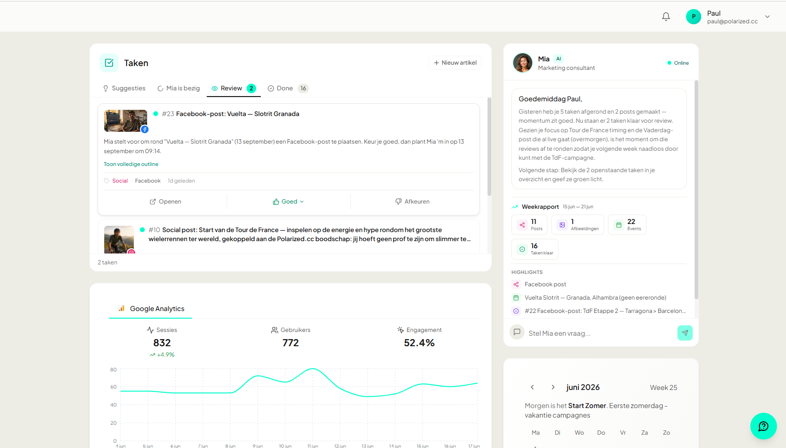
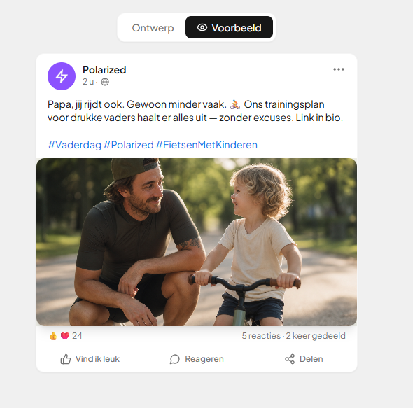

Eén platform voor je hele marketing.
Geen losse tools die elkaar niet kennen. Je begint met je bedrijfsprofiel, dat stel je één keer in. Daarna draaien vijf modules op datzelfde profiel, en Mia loopt er als rode draad doorheen.
Eerst je bedrijfsprofiel. Nu beschikbaar
Dit stel je één keer in. Daarna weet elke module al wie je bent.
Je plakt je website en Mia leest hem uit: wat je verkoopt, voor wie, en in welke toon. Zo hoef je het nergens opnieuw uit te leggen. Het kost ongeveer 10 minuten.
- Leest je website automatisch uit
- Herkent je huisstijl, toon en doelgroep
- Geeft elke module dezelfde basis

En dit doen de vijf modules.
Allemaal gevoed door je bedrijfsprofiel. We beginnen bij het dashboard, je startscherm, en lopen daarna de vier werk-modules langs.
1 Dashboard Nu beschikbaar
Je startscherm met al je cijfers op één plek.
Geen vijf tabbladen meer. Je website, je advertenties en je webshop staan bij elkaar, plus wat er op dit moment loopt. Mia houdt het scherm voor je bij en zet bovenaan waar je vandaag op moet letten.
- Je belangrijkste cijfers bovenaan
- Bezoekers op je site, zonder Analytics te openen
- De status van elke taak: bezig, wacht op jou of klaar

2 Social posts Nu beschikbaar
Mia kijkt in je kalender en zet de posts klaar. Jij keurt goed.
Mia kijkt naar je agenda (feestdagen, acties, vaste momenten) en komt uit zichzelf met postvoorstellen in jouw merkstijl, met tekst én beeld er al bij. Jij keurt goed, en Mia plant ze voor je in. Wil je het helemaal uit handen geven? Dan plaatst Mia ze ook zelf op je socials. Jij hoeft dus eigenlijk alleen maar goed te keuren.
- Voorstellen op basis van je kalender
- Goedgekeurd? Mia plant ze in, of plaatst ze zelf
- Voor Instagram, LinkedIn en Facebook

3 Advertenties Binnenkort
Advertenties voor Google en Meta.
Mia kijkt naar wat bij jou al werkt en schrijft daar varianten op, in jouw eigen toon. Jij legt ze naast elkaar, kiest de beste en keurt goed. Je budget en je timing houd je zelf in de hand, en niets gaat zonder jou live.
- Voor Google en Meta
- Varianten geschreven door Mia
- Jij keurt goed, altijd
4 SEO en GEO content Binnenkort
Teksten die je vindbaar maken.
Mia zoekt de woorden waar jouw klanten écht op zoeken en schrijft of verbetert daar je pagina's mee. Gericht op Google, maar ook op AI-antwoorden zoals ChatGPT, zodat je ook dáár als antwoord naar voren komt. Een score en checklist laten zien wat al goed staat en wat nog beter kan.
- Op echte zoekwoorden
- Vindbaar in Google én AI
- Met score en checklist erbij
- kapsalon den haag
- balayage prijs
- kleurspecialist
5 Google & Meta ads-beheer Binnenkort
Je lopende campagnes beheerd en bijgestuurd.
Mia houdt je Google- en Meta-campagnes in de gaten: ze ziet wat oplevert en wat alleen geld kost, en stelt bijsturingen voor. Jij beslist wat er verandert, zodat je budget naar de beste campagnes gaat.
- Google Ads en Meta Ads op één plek
- Mia signaleert en stelt bijsturing voor
- Jij houdt de knoppen in handen
Eén profiel.
Vijf modules. Eén Mia.
De eerste keer instellen kost ongeveer 10 minuten. Daarna draait het.